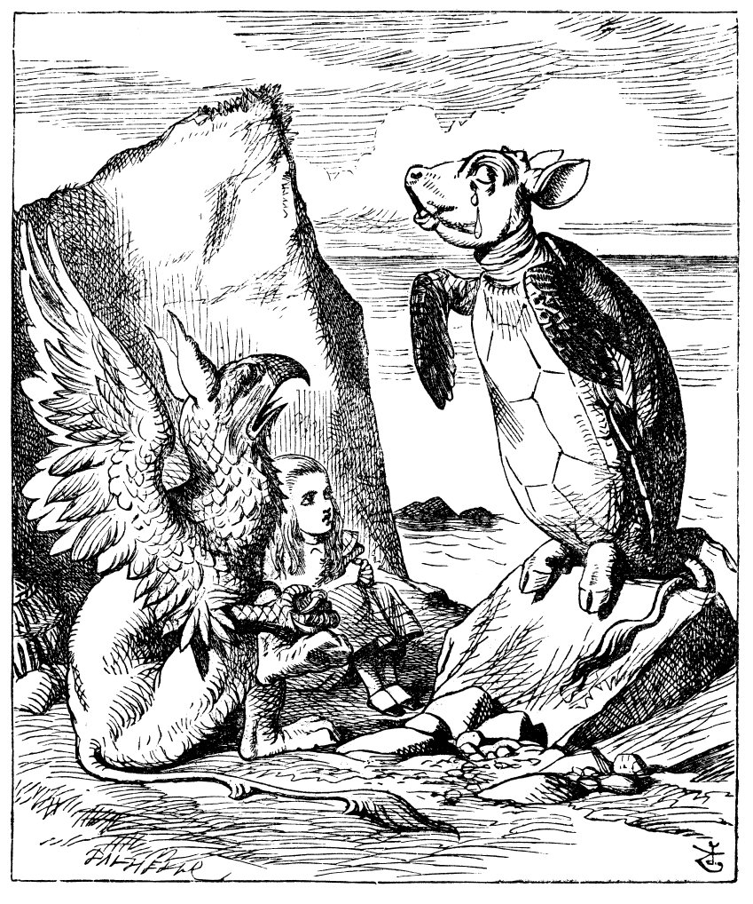
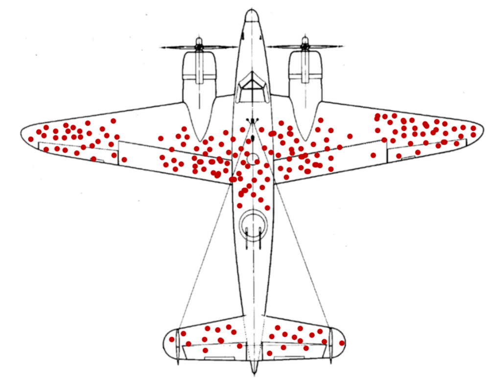

CO886: Software Engineering
Testing tools
Tomas Petricek
email: t.petricek@kent.ac.uk
twitter: @tomaspetricek
office: S129A
{kind=link}
A brief history of testing

Debugging-oriented period (circa 1940s-1956)
Program checkout involves debugging or testing
Interpretative checking routines and post-
mortem dumps

Demonstration-oriented period (1957-1978)
Testing to show program correctness
Last step in the Waterfall methodology
Can we exhaustively
cover all cases?

Destruction-oriented period (1979-1980s)
Program testing can be used to show the presence of bugs, but never to show their absence (Dijkstra, 1970)
Professional testers focus on finding bugs through tests.
Evaluation-oriented period (1980s-now)
Testing as measurable part of development process
New theories and tools to support testing
Unit testing
How and why of unit testing

Tests for ensuring quality
- Unit tests to prevent regressions
- Write tests after you write code
- Continuous integration to run tests
Tests as a feedback mechanism
- Write tests before you write code
- Tests are a lightweight specification
- Command line or automatic runners
1: 2: 3: 4: 5: 6: 7: 8: |
|
Writing Java tests with JUnit
Write @Test methods and assertEqual to check results.
Run tests from Eclipse or terminal using Maven
Beyond simple tests
Unit testing and general testing concerns
Unit tests are just one, easy to automate kind
How to structure code to make testing easy?
How to test not just functions, but user interfaces
Property testing to specify more than one case
Demo: Writing simple unit tests
Test-driven development
Test-driven development (TDD)

Development methodology
- eXtreme programming practice
- Appeal of a scientific method
TDD in practice
- Write tests to capture requirements
- Implement code satisfying tests
- Run tests automatically and frequently
Test-driven development

Red-Green-Refactor
- Red - Add failing test for new unimplemented feature
- Green - Make it pass using whatever hacks you need
- Refactor - Improve quality
without breaking it
Test-driven development
Beyond the basic ideas
Originated in dynamic languages
Active tests vs. types debate!
Tests as executable user stories (BDD)
Do people really write tests first?
Advanced testing concepts
Writing testable code
Structuring program logic
- Check output for given input
- But what if it writes to a file?
- Indirection via interfaces!
Mocking frameworks
- Don't want to implement full interface
- Just check it is called correctly!
- Create and check using "mock" objects
1: 2: 3: 4: 5: 6: 7: 8: 9: 10: 11: |
|
Using the Java Mockito mocking framework
Create object using mock
Configure its returns using when and thenReturn
Use it as a normal object!
Random testing
How to cover all cases
- Testing is never exhaustive
- Use insights about code!
- Generate tests semi-randomly!
Random testing
- Specify property about code
- Should hold for any inputs
- Generate inputs randomly!
1: 2: 3: 4: 5: 6: 7: 8: 9: 10: |
|
Using the jqwik tool
Mark method as a @Property
Annotate arguments to specify input ranges
Return true if the
property holds!
Random testing
How to come up with good properties
Use simpler working implementation (oracle)
Use mathematical property (e.g., average)
Check for more basic facts
Algebraic properties like associativity
Summary
Testing tools
Brief history of testing
Debugging-oriented, demonstration-oriented
destruction-oriented & evaluation-oriented
Unit testing and tools
Unit testing library, test runners,
tools for mocking and random testing
Test-driven development
"Scientific" XP development methodology
Done through the red-green-refactor cycle
CO886: Testing tools
What you should remember from this lecture
- Test-driven development
- What is a mock and how to create one
- Come up with properties for random testing
Tomas Petricek
t.petricek@kent.ac.uk | @tomaspetricek
References
Papers and articles